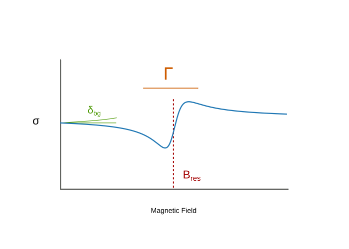
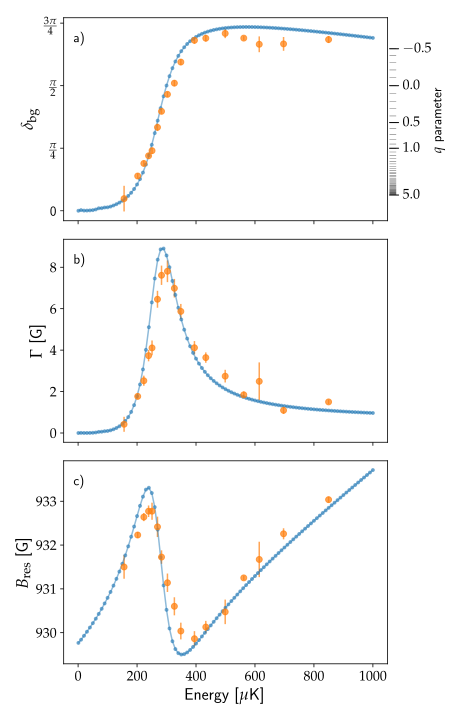

Watching Poles Dance
Resonance interactions in Atomic Scattering
Matthew Chilcott, Kjærgaard Lab
Watching Poles Dance
Resonance interactions in Atomic Scattering
Matthew Chilcott, Kjærgaard Lab
Watching Poles Dance
Resonance interactions in Atomic Scattering
Matthew Chilcott, Kjærgaard Lab
.jpg)

Collisions
Scattering Cross-section: \(\sigma\)

Resonances in Cross-section

The $S$ matrix
\[ \left|\psi_{\text{out}}\right> = S\left|\psi_{\text{in}}\right>\]
\[S(B,E)\]
\[\sigma \propto \big(\left<\psi_{\text{in}}\right|1 - S(B,E)\left|\psi_{\text{in}}\right>\big)^2\]
Poles in the $S$ matrix produce resonances
Inter-atomic potential defines scattering
$l > 0$ barrier can produce shape resonance
Closed channel can produce Feshbach Resonance
Closed channel can be tuned

Interaction between shape and Feshbach resonance


Scattered Fraction
\[\frac{N_\text{sc}}{N_\text{tot}} = \frac{\alpha\sigma}{1 + \alpha\sigma}\]
\[ \sigma_l(B, E) = \frac{4(2l+1)\pi\hbar}{mE}\sin^2\left(\delta_\text{bg}(E) + \tan^{-1}\left[\frac{\Gamma(E) / 2}{B - B_\text{res}(E)}\right]\right)\]
\[ \sigma(B, E) = \frac{2\pi\hbar}{mE}\sin^2\left(\delta_\text{bg}(E) + \tan^{-1}\left[\frac{\Gamma(E) / 2}{B - B_\text{res}(E)}\right]\right)\]

We scatter on the positive real axis

A function is analytic if the derivative is well defined: \[\frac{\text{d}}{\text{d}z} f(z)\]
Identical over a line \(\iff\) Identical everywhere
